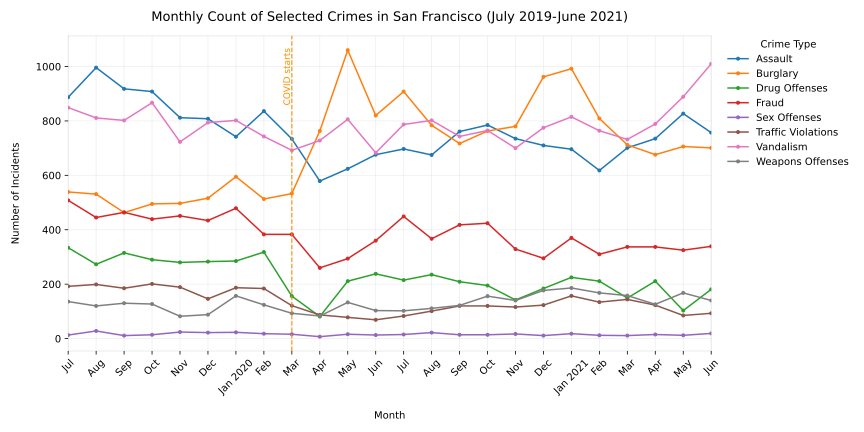

CRIME IN SAN FRANCISCO DURING
THE COVID PANDEMIC AND LOCKDOWN
In 2020, something unprecedented happened. You probably remember it. News had been spreading since 2019 of a new,
highly infectious virus emerging from China, and in early 2020, the situation became so serious that the whole world
shut down almost from one day to the other. Schools, offices and bars were closed, people were sent to stay home,
and the streets were left empty. You could still go to the grocery store or the pharmacy, but you had to wear a face
mask and respect social distancing. In a way, it was the biggest social experiment in history.
What happens to crime in a situation like that? When restaurants, bars and nightclubs shut down and festivals are canceled,
we might expect to see fewer drug offenses, assaults, and sex offenses. When people are forced to stay home, we
might expect fewer traffic violations. On the other hand, some types of crime might increase while other remain completely unaffected.
Can you guess which?
In this article, we'll take a look at how crime patterns changed during the COVID lockdown using San Francisco as a
case study, and try to understand the underlying causes. Let's dive into the data!
First, here's an overview of crime rates in San Fransisco, from July 2019 (nine months before the Lockdown) to until June 2021. Since the
raw data has close to 100 different crime categories, we've simplified it and selected a few to display. We've
also marked March 2020 which is when the first mandatory COVID lockdown was announced in San Francisco according
to the National Library of Medicine.

See that orange line right after the lockdown begins? That's a lot of burglaries! Over 1000 were reported in
May 2020 alone, which is roughly twice as many as in a typical pre-COVID month. Most other types of crime are going
down, but burglaries are shooting up. What's going on?
Let's think about it for a second. Everyone's been sent home for the lockdown, so it's probably not residences that
are being burglarized. But offices, parking lots, shops, and warehouses are sitting unattended all over the city.
Easy targets for an enterprising burglar.That explanation makes a lot of sense, but we're going to need some more evidence to support it.
Let's look at some news articles and research papers published during the pandemic.
This article from NBC Bay Area News, published early April 2020, only two weeks after the first lockdown,
reports an increase in shoplifting and risky behaviors in stores. "Employees and customers at a San Francisco
Walgreens are calling for additional staff, security, and protective equipment during the COVID-19 pandemic,
saying shoplifting and dangerous behavior inside the store have reached new heights during the city's weeks-long stay-at-home order."
Ten months after the first lockdown:
This article from BCS, published in January 2021, reports a rise in break-ins, particularly in small local
businesses under the Lockdown. "Burglaries have gone up 111% in the neighborhood during the pandemic, compared to
the same period the year prior".
Which brings us to our second visualization.
Can we also find, with our data, that commercial areas were particularly affected by this rise in burglary?
Heat map of reported burglaries between July 2019 and June 2021
What you're looking at is a heat map of monthly burglaries in San Francisco from July 2019 to June 2021.
You'll notice the burglary locations pre-lockdown are relatively scattered across San Francisco, but after
the lockdown begins we see a tight concentration in the northeast part of the map. This is the Central Business
District area, Union Square, which contains mostly shopping malls and high-end stores and restaurants.
Since we've mapped out every month between July 2019 and June 2021, you can see for yourself the transition
between March 2020 and April 2020, and observe how the center lights up in orange and red, showing the same
spike in burglaries in April and May 2020 that we observed in our earlier graph.
We've found a trend, we've formed a hypothesis, and we've backed it up with some evidence from news articles
and research papers. The heat map seemed to support the story. But let's go back to the raw data and see if
it also supports our hypothesis.
This time, we'll look at each individual District and how burglary counts evolved in each one of them
over the lockdown period. The plot shows the most affected areas, but you can add others to see just how
much these districts stand out in comparison. We can see that the most affected districts are Northern and
Central, followed by Mission and Southern. All of them are "downtown" districts with lots of commercial and
mixed use land. Try adding some more residential districts, like Ingleside or Taraval and see how they compare.
Note that we still observe burglaries in residential areas close to the center, even after the lockdown of
April 2020! Strange, no? Considering everyone is confined in their homes.
One answer to this if offered by
this paper written by Ha Neul Yim and Jordan R Ridell.
Residential areas close to central San Francisco are referred to as "mixed use land" meaning they hold both commercial
areas and residents. In their paper they argue that these were indeed potentially ideal for theft during lockdown: "Mixed land use
areas may have a higher risk of commercial burglary because employees and customers were no longer present to act
as capable guardians as businesses were forced to be closed during the lockdown periods."
So, what did we learn? In short, we saw that when society shuts down, crime certainly doesn't stop. In fact,
unusual situations like a lockdown can create new opportunities for crime that policy makers and law enforcement
might not have anticipated. In the case of San Francisco, we saw a huge increase in burglaries during
the COVID lockdown, particularly in commercial areas that were left unattended. This highlights the importance of
considering the unintended consequences of such large-scale policy decisions, and the need for targeted interventions
to protect vulnerable areas during such times. Next time, we'll hopefully be better prepared.